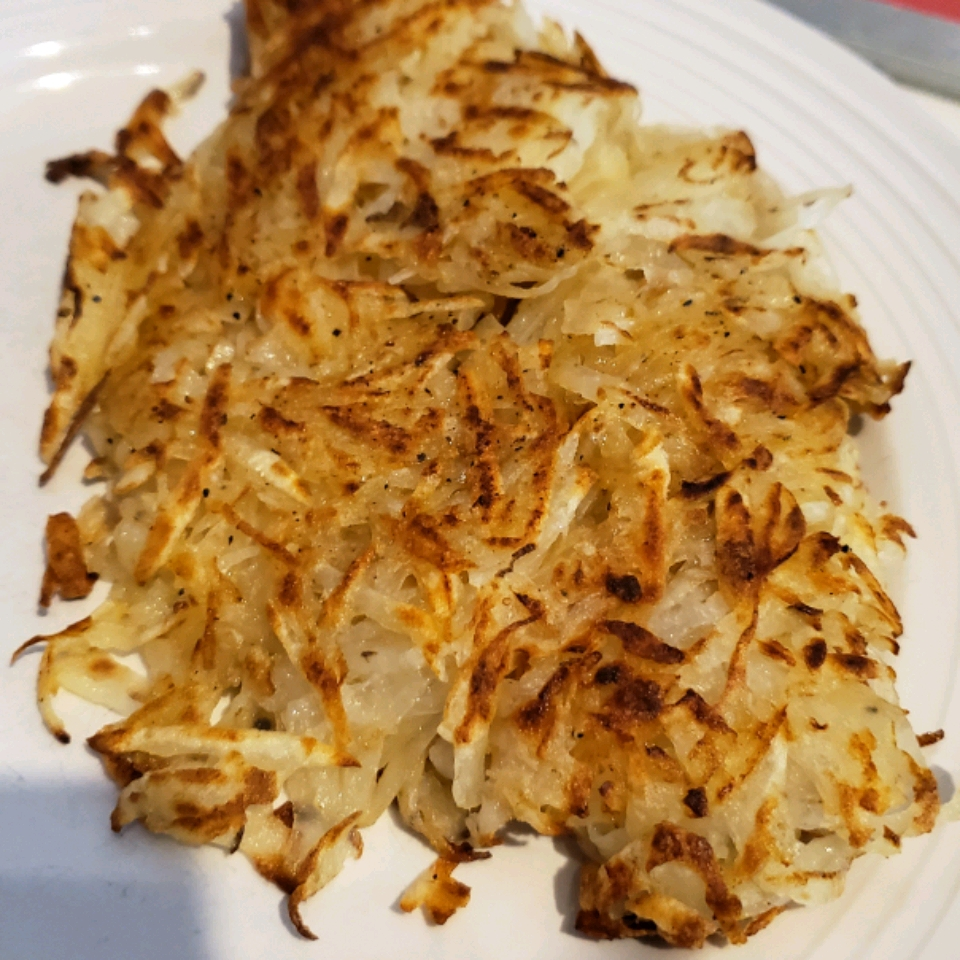

Classic Hash Browns

Description:
These classic diner-style hash browns are crispy on the outside and fluffy on the inside.
Ingredients:
- 2 russet potatoes,peeled
- 3 tablespoons clarified butter
- salt and ground black pepper to taste
- 1 pinch cayenne pepper, or to taste
- 1 pinch paprika, or to taste
Steps:
- Shred potatoes into a large bowl filled with cold water.Stir until water is cloudy,
drain, and cover potatoes again with fresh cold water.Stir again to dissolve excess
starch.Drain potatoes well, pat dry with paper towels, and squeeze out any excess
moisture.
- Heat clarified butter in a large non-stick pan over medium heat.Sprinkle shredded
potatoes into the hot butter and season with salt,black pepper, cayenne pepper, and
paprika.
- Cook potatoes until a brown crust forms on the bottom,about 5 minutes.Continue to
cook and Stir until potatoes are browned all over,about 5 more minutes.